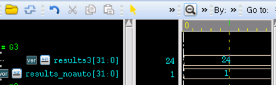
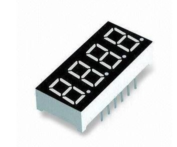
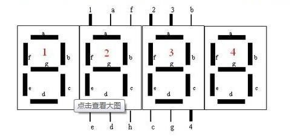

Keywords: functions, endian conversion, seven-segment display decoding
In Verilog, tasks (keyword: task) or functions (keyword: function) can be used to extract repetitive behavioral-level designs and call them in multiple places, avoiding repeated writing of duplicate code and making the code more concise and easier to understand.
Function
Functions can only be defined in a module, at any location, and can be referenced anywhere within the module; their scope is also limited to this module. Functions mainly have the following characteristics:
- 1) They do not contain any delays, timing, or timing control logic.
- 2) They have at least one input variable.
- 3) They have only one return value and no output.
- 4) They do not contain non-blocking assignment statements.
- 5) Functions can call other functions, but cannot call tasks.
The Verilog function declaration format is as follows:
function [range-1:0] function_id ; input_declaration ; other_declaration ; procedural_statement ; endfunction
When a function is declared, a register variable with width range and name function_id is implicitly declared, and the function's return value is passed through this variable. When no width is specified for this register variable, the default width is 1.
Functions are called by specifying the function name and input variables. When the function ends, the return value is passed to the calling location.
The function call format is as follows:
function_id(input1, input2, …);
Below, a function is used to implement data endian conversion.
When the input is 4'b0011, the output can be 4'b1100. For example:
Example
#(parameter N = 4)
(
input en, //enable control
input [N-1:0] a ,
output [N-1:0] b
);
reg [N-1:0] b_temp ;
always @(*) begin
if (en) begin
b_temp = data_rvs(a);
end
else begin
b_temp = 0 ;
end
end
assign b = b_temp ;
//function entity
function [N-1:0] data_rvs ;
input [N-1:0] data_in ;
parameter MASK = 32'h3 ;
integer k ;
begin
for(k=0; k<N; k=k+1) begin
data_rvs[N-k-1] = data_in[k] ;
end
end
endfunction
endmodule
Parameters in a function can also be modified, for example:
defparam data_rvs.MASK = 32'd7 ;
However, simulation reveals that this writing style compiles successfully, but in the simulation results, the parameter MASK in the function is not actually modified successfully, and it remains 32'h3. This may be related to the compiler. Interested scholars can experiment with other Verilog compilers.
When declaring a function, you can also add parentheses after the function name to enclose the input declarations.
For example, the above endian conversion declaration function can be expressed as:
function [N-1:0] data_rvs（
input [N-1:0] data_in
......
） ;
Constant function
A constant function is a function whose result is computed as a constant during compilation before simulation begins. Constant functions are not allowed to access global variables or call system functions, but they can call other constant functions.
Such functions can be used to reference complex values, so they can be used to replace constants.
For example, the following constant function can be used to calculate the width of the address bus in a module:
Example
reg [logb2(MEM_DEPTH)-1: 0] addr ; //The width of addr can be obtained as 8 bits
function integer logb2;
input integer depth ;
//256 is 9 bits, our final data should be 8, so the loop needs to stop early when depth=2
for(logb2=0; depth>1; logb2=logb2+1) begin
depth = depth >> 1 ;
end
endfunction
automatic function
In Verilog, the local variables of ordinary functions are static, meaning that each call to the function uses the same storage space for its local variables. If a function is called concurrently in two different places, the two function call behaviors operate on the same address at the same time, leading to uncertain function results.
Verilog uses the keyword automatic to describe functions. Such functions can automatically allocate new memory space when called, which can also be understood as being recursive. Therefore, local variables declared in an automatic function cannot be accessed through hierarchical naming, but the automatic function itself can be called through a hierarchical name.
Below, an automatic function is used to implement factorial calculation:
Example
function automatic integer factorial ;
input integer data ;
integer i ;
begin
factorial = (data>=2)? data * factorial(data-1) : 1 ;
end
endfunction // factorial
The following are the simulation results with and without the keyword automatic.
It can be seen from the figure that the signal results3 obtained the desired result, that is, the factorial of 4.
The signal results_noauto has a value of 1, which is not a predictable normal result, so no further useless analysis will be done here.

Seven-segment display decoding
The function knowledge covered above does not seem to demonstrate the advantages of functions. Below, a 4-digit decimal seven-segment display decoder is designed to illustrate the advantage that functions can simplify code.
The figure below is a physical diagram of a seven-segment display, which can be used to display 4-digit decimal numbers. It has quite wide applications in competition scoring, timekeeping, and other aspects.

Each digit display segment has 8 light control terminals (as shown by a-g in the figure), which can be used to control the display of digits 0-9.
The seven-segment display has 4 chip selects (shown as 1-4 in the figure), used to control which digit display segment should be selected, i.e., which one should light up. If the 4 digit display segments are selected and lit in sequence within a very short time, while different light controls are given under different chip selects (each corresponding to the 4 decimal digits), then within the limits of what the human eye can distinguish, the effect of displaying 4 decimal digits simultaneously is achieved.

Below, we use the signal abcdefg to control the light control terminals, and the signal csn to control the chip select. The ones, tens, hundreds, and thousands digits of the 4-digit decimal number are represented by four 4-bit signals single_digit, ten_digit, hundred_digit, and kilo_digit, respectively. The display design of one seven-segment display can be described as follows:
Example
(
input clk ,
input rstn ,
input en ,
input [3:0] single_digit ,
input [3:0] ten_digit ,
input [3:0] hundred_digit ,
input [3:0] kilo_digit ,
output reg [3:0] csn , //chip select, low-available
output reg [6:0] abcdefg //light control
);
reg [1:0] scan_r ; //scan_ctrl
always @ (posedge clk or negedge rstn) begin
if(!rstn)begin
csn <= 4'b1111;
abcdefg <= 'd0;
scan_r <= 3'd0;
end
else if (en) begin
case(scan_r)
2'd0:begin
scan_r <= 3'd1;
csn <= 4'b0111; //select single digit
abcdefg <= dt_translate(single_digit);
end
2'd1:begin
scan_r <= 3'd2;
csn <= 4'b1011; //select ten digit
abcdefg <= dt_translate(ten_digit);
end
2'd2:begin
scan_r <= 3'd3;
csn <= 4'b1101; //select hundred digit
abcdefg <= dt_translate(hundred_digit);
end
2'd3:begin
scan_r <= 3'd0;
csn <= 4'b1110; //select kilo digit
abcdefg <= dt_translate(kilo_digit);
end
endcase
end
end
/*------------ translate function -------*/
function [6:0] dt_translate;
input [3:0] data;
begin
case(data)
4'd0: dt_translate = 7'b1111110; //number 0 -> 0x7e
4'd1: dt_translate = 7'b0110000; //number 1 -> 0x30
4'd2: dt_translate = 7'b1101101; //number 2 -> 0x6d
4'd3: dt_translate = 7'b1111001; //number 3 -> 0x79
4'd4: dt_translate = 7'b0110011; //number 4 -> 0x33
4'd5: dt_translate = 7'b1011011; //number 5 -> 0x5b
4'd6: dt_translate = 7'b1011111; //number 6 -> 0x5f
4'd7: dt_translate = 7'b1110000; //number 7 -> 0x70
4'd8: dt_translate = 7'b1111111; //number 8 -> 0x7f
4'd9: dt_translate = 7'b1111011; //number 9 -> 0x7b
endcase
end
endfunction
endmodule
The simulation results are as follows.
It can be seen from the figure that signals such as chip select and decoding all conform to the design. In practice, the 4 digits should remain unchanged for a certain period of time, while the chip select signal continuously scans in a loop, so that the seven-segment display presents a static display effect to the human eye.

Summary
If the decoder design did not use the function dt_translate, then when assigning the signal abcdefg in each case option, it would also be necessary to make judgments on single_digit, ten_digit, hundred_digit, and kilo_digit. These judgment statements would be repeated 4 times. Although the actual hardware circuit synthesized at the end may be the same, it is obvious that the code using functions is more concise and readable.